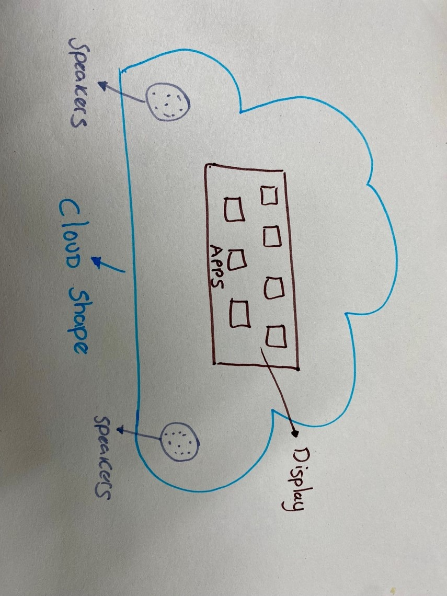
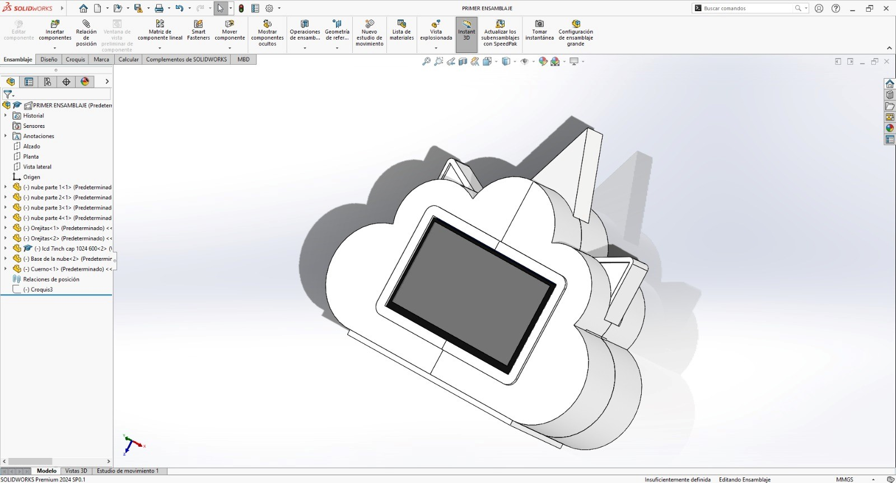

Final Project
Hello, I will explain the final idea of my project, I hope you like it.
Attention deficit hyperactivity disorder is one of the neurodevelopmental disorders that manifests in childhood and usually lasts until adulthood, according to InfoMED 5% of the child population is affected by this syndrome, it is common in these cases the difficulties to attend, some children talk so much and fast that they forget the words, have a different pace of learning, they are usually restless . The main characteristics are hyperactivity, impulsivity and poor attention span. The prevalence is between 2% and 12% in infants and in adults it is estimated b e t w e e n 2.5% and 5%; likewise ADHD begins to reveal itself before the age of 7 years compared to girls, boys comprise 4 to 1 because they are the most likely to suffer from this disorder.
In these conditions it is very important to improve learning using various techniques such as self-instruction, this aims to achieve the academic integration of the individual. There are 3 types of mild ADHD when the child has difficulty remaining still or sitting in the classroom, moderate ADHD presents difficulty in maintaining attention and has impulsive behavior, severe ADHD persists with attention problems and in this case should be medicated.
Research:
The first step is to find methods and concentration techniques which help me and I can integrate into my project.

My first sketch is this:
My project idea is based on the development of a tool generated with digital fabrication. This tool will allow us to enhance learning and provide support to children with attention deficit hyperactivity disorder (ADHD), creating a space for greater concentration through various musical and visual elements. It will take the friendly form of a cloud, which will possess a teaching system through educational apps, all aimed at improving the child's level of concentration.
Structure Design
Within week two I took the opportunity to design the structure that my project will have, being friendly and above all maintaining a striking image for the children.
I am in the development of the electronic part and the programs that my project will carry to create habits of concentration as well as feeding the list of white noise music that it will carry……….